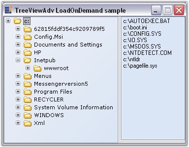

LoadOnDemand feature is to give a delay in loading a node in a Tree, before the user initiates a node to expand.
By setting LoadOnDemand property to true, the plus(+) and minus(-) of all the nodes will be visible in the beginning. By handling the BeforeExpand event of the nodes, subnodes can be added to the respective nodes. Now the tree will display or hide the plus or minus based on whether or not the children are added.
|
TreeViewAdv Properties |
Description |
|
LoadOnDemand |
Specifies if the tree should follow the LoadOnDemand paradigm. |
|
AddSeparatorAtEnd |
Indicates if the TreeNodeAdv.GetPath method adds a separator at the end of the path string returned. |
|
TreeNodeAdv Methods |
Description |
|
GetPath |
Method which is used to derive the path string for a specific node. |
Retrieving Node Path
In the BeforeExpand event the user can retrieve the path string for a specific node using the TreeNodeAdv.GetPath method where the user can also specify the separator.
The vital thing in this sample is that the TreeViewAdv.AddSeparatorAtEnd property must be set to True to add a "\\" character at the end of the path of the node, when calling the Node.GetPath method.
|
[C#]
this.treeViewAdv1.LoadOnDemand = true; this.treeViewAdv1.AddSeparatorAtEnd = true;
private void treeViewAdv1_BeforeExpand(object sender, Syncfusion.Windows.Forms.Tools.TreeViewAdvCancelableNodeEventArgs e) { if(e.Node.ExpandedOnce) return; // Retrieves the path for the specific node. //Get the Path of the node and AddSeparatorAtEnd Property set to true string path = e.Node.GetPath("\\"); //Get an Array of Directories from the current directory path ArrayList dirs = new ArrayList(Directory.GetDirectories(path)); //Add the Directories as a node in TreeViewAdv for(int i=0;i<dirs.Count;i++) { string dir = (string)dirs[i]; int lastIndex = dir.LastIndexOf("\\")+1; TreeNodeAdv node = new TreeNodeAdv(dir.Substring(lastIndex)); e.Node.Nodes.Add(node); } }
private void treeViewAdv2_AfterSelect(object sender, EventArgs e) { if(this.treeViewAdv2.SelectedNode!=null) { Rectangle bounds = this.treeViewAdv2.SelectedNode.Bounds; this.listBox1.Items.Clear(); try { this.listBox1.Items.AddRange(Directory.GetFiles(this.treeViewAdv2.SelectedNode.GetPath("\\"))); } catch{} // Exception will be thrown in the user renamed the dirs and then selects them. Lose the exception. } } |
|
[VB.NET]
Me.treeViewAdv1.LoadOnDemand = True Me.treeViewAdv1.AddSeparatorAtEnd = True
Private Sub treeViewAdv2_BeforeExpand(ByVal sender As Object, ByVal e As Syncfusion.Windows.Forms.Tools.TreeViewAdvCancelableNodeEventArgs) Handles treeViewAdv2.BeforeExpand 'Checking Whether the Node has been expanded atleast once If e.Node.ExpandedOnce Then Return End If 'Retrieves the path for the specific node. 'Get the Path of the node and AddSeparatorAtEnd Property set to true Dim path As String = e.Node.GetPath("\") 'Get an Array of Directories from the current directory path Dim dirs As ArrayList = New ArrayList(Directory.GetDirectories(path)) 'Add the Directories as a node in TreeViewAdv Dim i As Integer = 0
Do While i < dirs.Count Dim dir As String = CStr(dirs(i)) Dim lastIndex As Integer = dir.LastIndexOf("\") + 1 Dim node As TreeNodeAdv = New TreeNodeAdv(dir.Substring(lastIndex)) e.Node.Nodes.Add(node) i += 1 Loop End Sub
Private Sub treeViewAdv2_AfterSelect(ByVal sender As Object, ByVal e As EventArgs) Handles treeViewAdv2.AfterSelect If Not Me.treeViewAdv2.SelectedNode Is Nothing Then Dim bounds As Rectangle = Me.treeViewAdv2.SelectedNode.Bounds Me.listBox1.Items.Clear() Try Me.listBox1.Items.AddRange(Directory.GetFiles(Me.treeViewAdv2.SelectedNode.GetPath("\"))) Catch ' Exception will be thrown in the user renamed the dirs and then selects them. Lose the exception. End Try End If End Sub |

Figure 1165: TreeViewAdv LoadOnDemand
A sample demonstrating the LoadOnDemand feature in available in the below sample installation path.
..\My Documents\Syncfusion\EssentialStudio\Version Number\Windows\Tools.Windows\Samples\2.0\Tree Package\TreeViewAdvLoadOnDemand
See Also